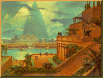

1
suck
http://www.suck.com/
The editors of suck strive to debunk the corporate media frenzy attacking the Web, fighting "literary laziness" by providing thought-provoking content on a daily basis. Cleanly designed and well written, suck editors sprinkle hyperlinks throughout their text to move their stories forward. Their topics range from the absurd number of tepid "cool" sites to pointing readers to a book probing what would happen if Nietzsche worked at a convenience store. Arguably one of the most worthwhile reads on the Web, this site will help you learn what's going on behind the hype and the links of the 'net.
Index Librorum Liberorumm
http://www.fourmilab.ch/index.html
John Walker's site of various science toys, though seemingly simple at first, quickly explodes the myth of the Web as a passive learning tool. One of the few sites in which it's possible to lose countless hours, Walker's simulations take better advantage of their medium than any other science site we've seen. Cship, our personal favorite, explains the theory of relativity by taking you on a ship traveling close to the speed of light and then using MPEGs and JPEGs to show how the rest of the surrounding environment shifts. Cship is only one of several such experiments, however -- there's much more to this site than we could possibly give justice to in a short description. Of course, when you create a new planet daily (check out the Terranova page), putting up a complex Web site must not seem too hard.
AFU FAQ
http://www.dsg.cs.tcd.ie:/ dsg_people/afcondon/AFU/ULs.html
Are Tasmanian devils extinct? Is there such a thing as a kosher Chinese restaurant? Is there a place to get hard liquor in Disneyland? Are gerbils illegal in California? To find out, you'll have to read the lengthy Frequently Asked Questions of alt.folklore.urban, a document filled with the astonishing truth about commonly repeated rumors and "facts." Each entry is flagged as true, possibly true, blatantly false or probably not true, but scientifically possible. However, even the knowledgeable FAQ can't be certain if Lee Harvey Oswald acted alone.
Church of the SubGenius
http://sunsite.unc.edu/subgenius/
In this holy site on the Web, learn the sacred laws, myths and comic teachings on the importance of slack from the Rev. "Bob" Dobbs. Every visit to the Church requires a check into the rants of members in the Hall of Answers, where you read about everything from Microwave Harassment and Mind-Control Experimentation (Part II only) and a studious look at slack and dogs. It's worth the navigation to search for The Endless FAQ. (Pity the poor soul who expects a detailed, anal-retentive archive source on a group called alt.slack.) The SubGenius altar recently added radio capabilities to the site, so you can hear Bob's preachings yourself. All slackers give praise to Bob!
WWWF Grudge Match
http://www.cheme.cornell. edu:80/~slevine/lastweek.html
Ever wondered if the Munsters could beat the Addams Family on Family Feud? Or if Gary Coleman could take Webster in an old-fashioned street brawl? How about whether Mr. Clean could hold his own is a bar brawl with Mr. T? Two Cornell college students have, and they took their musings to the Web in the form of weekly grudge matches. After reading the setting and commentary from the site's authors you get to cast your vote on the outcome. And despite popular opinion we think Herman and company would whip Gomez et. al.
TV Bytes: The WWW TV Themes Home Page
http://www.tvtrecords. com/tvbytes/tvthemes.html
Not much glitz, just an exhaustive resource of TV theme songs there for the downloading. This collection is amazing, ranging from old stand-bys (The Brady Bunch, Gilligan's Island) to forgotten classics (Six Million Dollar Man, Top Cat) to themes no one could possibly hum (Punky Brewster, Vega$). Special bonus: There's a whole Schoolhouse Rock section. The sound quality isn't perfect, but this is Hong Kong Phooey, not Vivaldi, so who cares?
NBA Online
http://www.nba.com/
The official site of the NBA is a must-stop for any hoops fan. Visit individual pages for every team and nearly every player from Michael Jordan to Zan Tabak. Plus stats, standings, league leaders, transactions, news, notes, all-star balloting, Quick Time movies, RealAudio interviews -- no stone is left unturned at this very classy, polished site. Not convinced? There's even directions to the Delta Center in downtown Salt Lake City.
No Shitting in the Toilet
http://www.magna.com.au/~travdude/
Aussie Peter Moore named his irreverent travel site after a real sign he encountered on a trek to China. The sign made no sense, but that's just the point; much of traveling comes with the unexpected, and that's just fine by Moore. In his site, he offers loads of advice written in a wonderful humorous voice.Top choices here are the sections detailing romance on the road and the Top 10 bum steers that well- known travel guide books offer tourists. We'd travel with Moore anywhere.
The Seven Wonders of the Ancient World
http://pharos.bu.edu/Egypt/Wonders/modern.html
 This site, created by Purdue graduate student Alaa Ashwamy, manages to take one of those topics everyone knows exists (though few know little more than that) and make it both entertaining and enlightening. Chock-full of hyperlinks and facts that are only sort of useless (for example, the word mausoleum comes from the Tomb of Maussollos at Halicarnassus), the Seven Wonders page even posts a few replacements for the absent six monuments, offering up comparatively modern creations like Angkor Wat, the Eiffel Tower and the Colosseum. No word yet as to whether South Dakota's Corn Palace is under consideration.
Autosite
http://www.autosite.com
 Whether you're choosing, purchasing, maintaining, accessorizing, repairing or selling a car, you owe it
to yourself to check out Autosite, an exhaustive resource of "timely facts, interactive tools, and expert
resources you need to make informed automotive decisions." One of the best features
is Autosearch, where you enter your criteria and the site presents you with a list of autos that fit your
needs. Then you can hyperlink to each car to see pictures, review options or read articles about that
vehicle. Happy motoring!
Whether you're choosing, purchasing, maintaining, accessorizing, repairing or selling a car, you owe it
to yourself to check out Autosite, an exhaustive resource of "timely facts, interactive tools, and expert
resources you need to make informed automotive decisions." One of the best features
is Autosearch, where you enter your criteria and the site presents you with a list of autos that fit your
needs. Then you can hyperlink to each car to see pictures, review options or read articles about that
vehicle. Happy motoring!